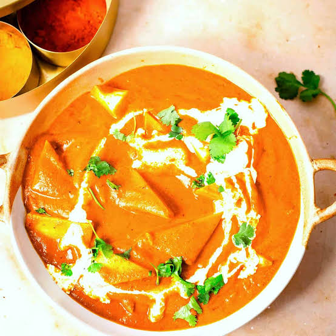

Shahi Paneer
Home

Description
Shahi paneer is a rich, royal North Indian dish made with soft paneer cubes in a thick, creamy gravy of yogurt, cream, and ground nuts.
Ingredients
- Paneer
- Onions,Tomatoes and Ginger-Garlic
- Cashews and Almonds
- Ghee or Butter
- Fresh Cream or malai
- Whole Spices
- Ground Spices
- Saffron or Sugar
Steps
- Boil onions, tomatoes, cashews, ginger, and garlic in water until soft.
- Blend the cooled mixture into a smooth, fine puree.
- Sauté whole spices (cardamom, cloves, cinnamon) in ghee or butter.
- Pour the blended puree into the pot with the spices.
- Add Kashmiri red chili powder, turmeric, and salt to the gravy.
- Simmer the sauce on low heat until the oil separates.
- Stir in a pinch of sugar, garam masala, and fresh cream.
- Add the paneer cubes gently into the simmering gravy.
- Cook for 5 minutes on low heat so paneer absorbs flavors.
- Garnish with crushed kasuri methi and a splash of extra cream.